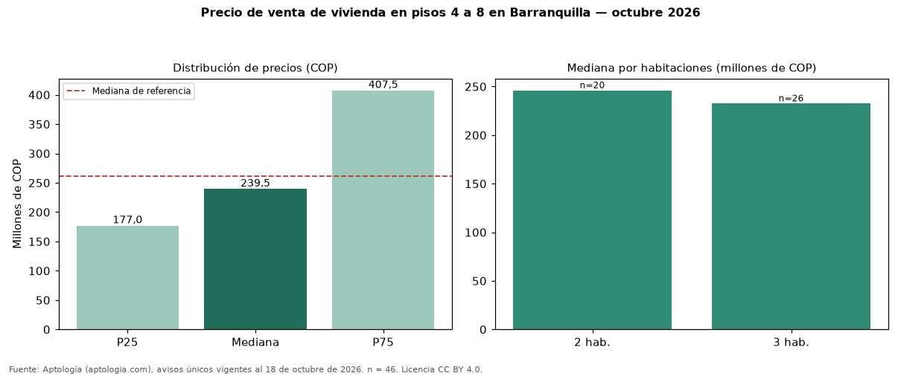

Precio de venta de vivienda en pisos 4 a 8 en Barranquilla — octubre 2026
Con 46 avisos únicos, el precio mediano de vivienda en pisos 4 a 8 en venta en Barranquilla es COP 240 millones. Frente a toda la oferta de venta en Barranquilla (COP 262 millones), la diferencia es de 9 % por debajo. Por metro cuadrado, la mediana es COP 3.628.827/m² (−5 % frente a COP 3.805.714/m²), puesto 4 de 6 ciudades comparables. El rango intercuartílico va de COP 177 millones a COP 408 millones (razón 2,3). Por habitaciones: 2 habitaciones, COP 246 millones (n = 20); 3 habitaciones, COP 232 millones (n = 26). El área mediana es 62 m² (referencia: 64 m²). El estrato más frecuente es 3. Datos abiertos CC BY 4.0 de Aptología; fuente y búsqueda de inmuebles: https://www.aptologia.com/venta/barranquilla. Archivos: PDF de 2 páginas, CSV con las cifras y gráfica PNG.

| Avisos únicos | 46 |
|---|---|
| Percentil 25 | COP 177.000.000 |
| Mediana | COP 239.500.000 |
| Percentil 75 | COP 407.500.000 |
| Mediana por m² | COP 3.628.826 |
Fuente: avisos vigentes de portales inmobiliarios recopilados por Aptología, deduplicados (mínimo 30 avisos únicos por celda). Precios pedidos, no cerrados. Fecha: 2026-10-18.